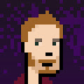
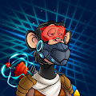
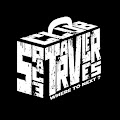
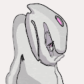
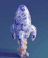
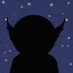
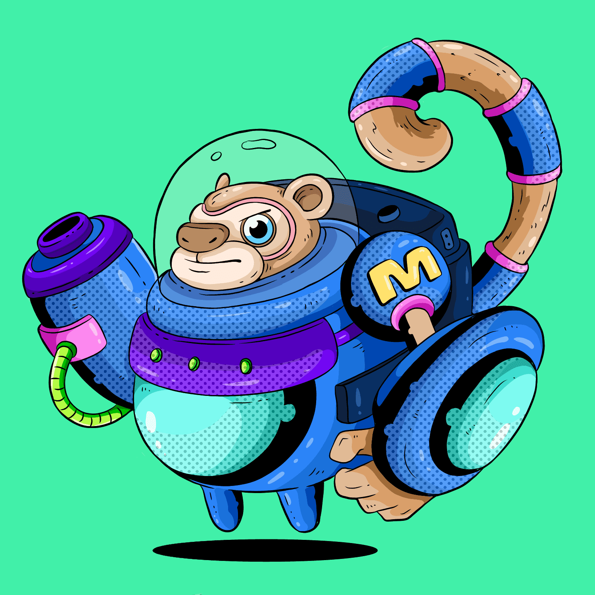
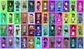

Space Ape MoonClub 在 SpaceShip 上占据一席之地，成为 NFT 世界中最好的太空社区之一！在看到 NFT 市场发生的荒谬事情后，Space Apes 完全失去了对人类的信心，决定离开这个星球。下一
Space AstroMonky Space AstroMonky 统计数据 创建于 6 个月前 101代币供应 10% 费用 过去 7 天没有售出 Space AstroMonky。 space astromonky 是由 10000 个随机生成的 NFT 组成的集合，这些 NFT 由独特的特征
Space Blazers Space Blazers 是一个社区驱动的集合,包含 3333 个风格化策划的3D NFT,围绕以太坊区 块链运行。 每款 Space Blazer 都是独一无二的,并通过 超过一百万种可能的组合以编程方
Space Bored Ape Club Official 关于 Space Bored Ape Club 是 5,555 只进化、独特和集成的宇航员猿的集合，它们在以太坊生态系统草地的太空中漫游，等待你铸造你的免费 NFT 并将其带到月球。我们希望建立一
Space Flight Simulator Space Flight Simulator 是一款不断发展的交互式 NFT 游戏。 5555 个独特的宇宙等待被发现。 第一个可在 OpenSea 上玩的交互式和不断发展的太空飞行模拟器游戏。 5555个独特的游戏！
Space Game - Darkness Egg 太空游戏 - 黑暗蛋 NFT - 常见问题（FAQ） ▶ 什么是太空游戏——黑暗之蛋？ Space Game - Darkness Egg 是一个 NFT（非同质代币）系列。 存储在区块链上的数字艺术品集合
Space Game - Fire Egg 太空游戏 - Fire Egg NFT - 常见问题（FAQ） ▶ 什么是太空游戏 - 火蛋？ Space Game - Fire Egg 是一个 NFT（不可替代代币）系列。存储在区块链上的数字艺术品集合。 ▶ Space
Space Game - Marines & Aliens V2 Space Game - Marines & Aliens V2 NFT - 常见问题（FAQ） ▶ 什么是太空游戏 - Marines & Aliens V2？ Space Game - Marines & Aliens V2 是一个 NFT（非同质代币）合集。存储在区块链上的数字艺术品集
Space Game - Poison Egg 太空游戏 - 毒蛋 NFT - 常见问题（FAQ） ▶ 什么是太空游戏 - 毒蛋？ Space Game - Poison Egg 是一个 NFT（非同质代币）集合。存储在区块链上的数字艺术品集合。 ▶ Space Game
Space Game - Water Egg 太空游戏-水蛋NFT-常见问题（FAQ） ▶ 什么是太空游戏 - 水蛋？ Space Game - Water Egg 是一个 NFT（非同质代币）集合。存储在区块链上的数字艺术品集合。 ▶
SPACE ID Domain Name Service 太空识别 SPACE ID 建立在 BNB Chain 之上，是一个通用名称服务网络，将数字世界中的人、信息、资产和应用程序无缝连接起来。它与链无关、去中心化、抗审查和开源。
Space Invaders Game NFT 太空侵略者游戏 NFT 统计 创建于 3 个月前 1,200 代币供应 7.5% 费用 270 名不和谐成员 过去 7 天没有售出 Space Invaders Game NFT。 Space Invaders Game NFT是 NFT 形式的互动游戏。1 Freemint / Wallet 玩并尝
Space Kubz 1,000 个独特的 3D Space KUBZ 生活在以太坊区块链上。 每个 NFT 都可以访问移动应用程序游戏。 通过玩游戏，您可以获得虚拟硬币，让您参与每日抽奖活动以赢取真实奖品。
Space Pod Stuff 过去 7 天没有售出 Space Pod Stuff。永远不会在任何至少不是 alpha 或 beta 的游戏项目上投资一毛钱。 这就是为什么我仍然没有拥有任何 Treeverse NFT，尽管我对发布感到
 Space Punks Galaxy 免费薄荷隐形发射在 10 分钟内售罄1111 太空朋克，完全动画。没有承诺，没有路线图，没有压力，完全 CC0 权利。只有一些朋克穿越银河。每笔交易 1 个，每
 SPACE SMASHERS 过去 7 天没有售出太空粉碎机。 终极太空粉碎机 SPACE SMASHERS NFT - 常见问题（FAQ） ▶ 什么是太空粉碎机？ SPACE SMASHERS 是一个 NFT（不可替代令牌）集合。存储在区块链上
 Space Travelers Club 经过 Space_Travelers_Club 太空旅行者俱乐部是一个真实体验 NFT 项目。第一个 NFT 旅游俱乐部。您的 Space Traveler 是您的会员卡，可让您参加我们的每月旅行活动以及许多会员专属福利。我们
 Space Trip: Bob Space Trip: Bob 是一个包含 5,000 个独特角色的集合，致力于满足太空探索和该行业技术发展的需求。鲍勃是来自行星 BD 1146 的独特外星种族的代表。我们这一代人出生得太早
 Space Yacht x Goldweard 乐与艺术的融合！ 我们的第一个品牌系列是迄今为止我们最具开创性的合作之一。Space Yacht 提供音乐，Goldweard 提供艺术品。他们共同为 NFT 空间
 SpaceAliensNFT SpaceAliens 是 SpaceBoys 宇宙中的独家生成 NFT 集合。 SpaceBoys 是以太坊区块链上的一个实验性生成 NFT 项目。它试图实施新的策略，为喜欢新事物的社区创造有趣和引人入胜的体验，只有
 SpaceBrawl NFT 寻找最强大战士的终极锦标赛。 SpaceBrawlers 是高度进化的动物，拥有征服宇宙的先进技术。 有超过 30 种动物可供选择，20 种不同的武器和 10 种不同的盔甲。 每个 SpaceBrawler 都是
SpaceCats Metaverse Club SpaceCatsNFT 太空猫的设计灵感是基于“量子物理学”和物种“文明”的发展路线。 算法精挑细选的作品最终产生了10万只太空猫，每只都是独一无二的。 拥有一只太空
 SpaceDudes NFT SpaceDudes 是一个讲述 NFT 的独特合作故事。 10,000 个独特的 ERC721 SpaceDudes 允许持有者投票和引导主要故事。 每个 SpaceDude 都有自己的自定义外观、统计数据和故事，具有不同的稀有度。 SpaceDudes NFT
SpacePirateBottles Apes Of Space 开始了他们的太空之旅，发现了奇怪的瓶子。 包含财富地图碎片、贵重硬币和传奇收藏品的瓶子。 他们决心帮助他们的朋友，并将一直旅行，直到找到海
Spaceships (for SpaceCowboys) 过去 7 天内没有出售太空牛仔太空飞船。 太空牛仔的宇宙飞船！ 因为每个牛仔都需要一艘船！ 太空船很快就可以用于单产农业了！ 注意旅行速度和最大旅行距离
Spank Pop Shots 收集并拥有一段色情历史，同时支持您最喜欢的成人模特！ Spank Pop Shots NFT 在过去 7 天内售出 1 次。Spank Pop Shots 的总销售额为 14.07 美元。一份 Spank Pop Shots NFT 的平均价格为
Spatial Accretion accretion ：名词新层或物质被缓慢添加到某物的过程”来自拉丁语 accretio(n-)，来自 accrescere ‘变得更大’，来自 ad- ‘to’ + crescere &ls
SPC Ghosts And Elders 欢迎来到 Space Punks Club 的 Ghosts and Elders 独家收藏之家。Ghost and Elders 只能通过牺牲原始 Space Punks Club 收藏中的克隆人的生命来诞生。 该艺术由 Seagull7x 创作。欲了解更多信息，请访问：
SpeakerHeads Vol. 1 SpeakerHeads Volume 1 NFTVolume 0xG3N3S1S（又名“Vol. 0”或“0G”）的官方第 1 卷合集。 在第 1 卷之前，有 0xG3N3S1S。 | 你知道吗，有一个特定的奇异
Spectacle by Sterling Crispin Spectacle 是对 Guy Debord 1967 年批判理论著作《The Society of the Spectacle》的重新诠释，使用 OpenAI 的 GPT3 神经网络将前十个论文简化为简单的英语，并使用 OpenAI 的 DALL-E 2 将这些
SPECTRUM Pass SPECTRUM 是艺术收藏家的专属通行证，提供接触新兴当代艺术家和所有未来免费 NFT 的独特途径。 所以@SpectrumPass 将在不到 24 小时内向持有者发布他们
Speed of Light by Jack Frost Episode 2 Jack Frost 的传奇：第 2 集“光速”标志着我们英雄旅程中的两个非常重要的里程碑。第一个里程碑是杰克在这个故事情节中第一次来到地球。第二个里程碑是，你第
Speedrun AI SpeedrunAI 利用最先进的机器学习算法生成现代艺术。在被卷入更深层次之前尝试逃跑。每个限量 1/1 物品都包含您可以拥有的 The Backrooms 的不同部分！ 每个系列包含 100 件生成艺
Spells of Genesis SpellsofGenesis_Offic… 由 EverdreamSoft 出品的 Spells of Genesis 官方，是第一款基于区块链的手机游戏。 它将集换式卡牌游戏 (TCG) 功能与街机游戏的傻瓜式游戏相结合。 我们自 2015 年以来铸造的卡片系列对 NFT
Spike 嗨，我是斯派克。我为了钱在区块链上创造了愚蠢的艺术。 过去 7 天没有卖出任何 Spike。 Spike 网站收集：https ://www.nftspike.com/ Twitter：https ://twitter.com/nftspike Spike NFT
Spin cat 薄荷是活的！ www.spincat-mint.io /0.03 ETH + gas！ （使用 ERC721/A 合约）。SPIN CAT NFT 是提供机会成为区块链上快速增长的在线彩票 VIP 俱乐部成员并从中获得被动收入的项目。 一切都
SpinCycle 过去 7 天内没有售出 SpinCycle。 NFT Creatives 的免费赠品，10% 的二次销售版税捐赠给慈善机构。 我们希望关注、转发或只是一条友好的消息 - https://twitter.com/NFTCreatives 在htt
Spirit World Genesis Collection 欢迎来到精神世界。 你敢在你的生活中邀请神秘和知之甚少的力量吗？ 它只是一个免费的薄荷糖，但真的有什么免费的吗？ 在黑暗时期保持坚强的勇敢灵魂将了
Spirit Zuki 过去 7 天没有售出 Spirit Zuki OFFICIAL。 现在薄荷：https ://spiritzuki.art/ Spirit Zuki 官方 NFT - 常见问题（FAQ） ▶ 什么是 Spirit Zuki OFFICIAL？ Spirit Zuki OFFICIAL 是一个 NFT（
Spirits of the Valley 在过去的 7 天里没有出售山谷之魂。 Spirits of the Valley NFT - 常见问题（FAQ） ▶ 什么是山谷之魂？ Spirits of the Valley 是一个 NFT（非同质代币）系列。存储在区块链上的数字
SplittersNFT 过去 7 天没有出售 SplittersNFT。 Splitters NFT 是 3,333 个碎片化视觉效果的集合，这些视觉效果达到了人类无法想象的程度。 SplittersNFT NFT - 常见问题（FAQ） ▶ 什


 太空舱的家居用品和家具。")


")